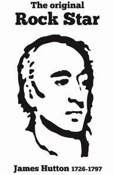

Trade Mark Journal No.2025/043 24 October 2025
UK00004251911 20 August 2025 (3,4,9,14,16,18,20,21,24,25,26,28,30,32,33)

- Class 3
- Toiletries and cosmetics; non-medicated cosmetics and toiletry preparations; cleaning preparation for personal use; soaps; hand washes; hand gels; hand cleansers; shower and bath preparations; bath and shower gels; hair and body washes; hair care preparations; cosmetic preparations; cosmetics for use on the skin; cosmetic creams and lotions; non-medicated skin care preparations; non-medicated body care preparations; scented body lotions and creams; bath lotions; skin lotions; hand lotions; body lotion; perfumed body lotions; skin creams; aromatherapy creams; hand creams; body creams; aromatherapy preparations; aromatherapy lotions; massage oils and lotions; perfumery and fragrances; fragrance preparations; fragrance for personal use; essential oils; reed diffusers; incense; room fragrances; reed diffusers; air fragrance reed diffusers; scented wax melts.
- Class 4
- Candles and wicks for lighting; wax lights; candles; scented candles; special occasion candles; aromatherapy candles; candle assemblies; wicks for candles; candle wax; wax for making candles.
- Class 9
- Mobile phone covers and cases; mobile phone chargers; mobile phone speakers; mobile phone straps; mouse mats; mouse pads; laptop bags; laptop sleeves; sunglasses; glasses cases; mobile applications; computer software applications; downloadable computer software applications; communication software; downloadable graphics for mobile phones; downloadable ringtones for mobile phones; electronic game software for mobile phones; publications in electronic format; downloadable publications; downloadable electronic publications; downloadable podcasts; audio books; computer games; electronic magazines; data carriers containing information recorded in electronic form. .
- Class 14
- Keyrings and ornamental pins; jewellery; fashion jewellery; ornaments [jewellery]; body jewellery; jewellery chains; charms for jewellery; charms for key rings; earrings; ear studs; cuff links; brooches; lockets; neck chains; necklaces; pendants; rings; decorative articles [trinkets or jewellery] for personal use; decorative pins [jewellery]; key rings and key chains; key rings of precious metal; key rings of common metal; non-metal key rings; clocks and watches; alarm clocks; chains for watches; jewellery cases, organisers and boxes; sculptures of precious metal; sculptures of precious metal; parts and fittings for all the aforesaid.
- Class 16
- Printed matter; paper, cardboard; printed publications; books; educational publications; printed educational materials; training manuals and printed publications; instructional and teaching materials; information books; promotional literature; programmes; flyers; leaflets; printed books; graphic art book; sticker books; notepads; illustrated notepads; sketch books; journal books; comic books; diaries; calendars; desk top planners; personal organisers; work of art and figurines; art prints; printed art works; graphic art prints; graphic drawings; pictorial prints; photographic prints; fine art prints; graphic prints and reproductions; graphic representations; art pictures; printed art reproductions; graphic art reproductions; works of art made on paper; lithographic works of art; works of art and figurines of paper and cardboard; paintings; paintings and calligraphic works; pictures; photographs; watercolours; wall decorations of paper; 3D wall art made of paper or card; canvas prints; decoration and art materials and media; photo albums and collector’s albums; advertisement boards; bunting; posters; postcards; printed covers; printed cases; cards; printed cards; beer mats; place mats and coaster of paper or card; stickers; paper badges; wrapping paper; stationery and education supplies; cases for stationery; stationery tins; book ends; paperweights; arts, crafts and modelling equipment; modelling clay; greeting cards; pens, pencils, cases therefor; erasers; markers; decals, heat transfers; passport holders; mounted and/or unmounted photographs; book covers, book marks; car stickers; drip mats of paper; paper towels; paper napkins; paper place mats; paper table cloths; paper coasters; paper towels; printed transfers for embroidery or fabric appliques.
- Class 18
- Leather and imitations of leather; trunks and travelling bags; bags; athletics bags; bath bags; beach bags; book bags; belt bags; boot bags; duffel bags; gym bags; handbags; backpacks; satchels; briefcases; holdalls; leather bags; shoulder bags; shoe bags; shopping bags; towelling bags; tote bags; toilet bags; toiletry bags; waist bags; weekend bags; work bags; umbrellas, parasols and walking sticks; belt bags; straps (leather shoulder-); belts (leather shoulder-); purses; chain mesh purses, not of precious metal; coin purses; change purses; clutch purses; cosmetic purses; evening purses; leather purses; purses, not of precious metal; wallets; pocket wallets; business card cases; credit card holders; key cases; articles of luggage, travel luggage and travel bags; luggage straps; plastic and metal and rubber luggage tags; roller suitcases, wheeled suitcases; bags for carrying pets; pet clothing; dog apparel; dog collars; dog leads; wash bags (not fitted); parts and accessories for all of the aforementioned.
- Class 20
- Statues, figurines, works of art, ornaments and decorations, made of wood, wax, plaster, bone or ivory; mirrors, wall mirrors, hand mirrors, frames for mirrors; picture frames, photo frames; cushions [furniture]; Storage cases, chests, baskets and units [furniture]; furniture and parts therefor; furniture for house, office and garden; display furniture; seats, benches, chairs, tables, desks, dressers, pouffes and footstools, bookcases, shelving units; garden and outdoor furniture; furniture shelves and racks; storage furniture and units; antique and antique reproduction furniture and antique style furniture; leather, wooden, glass, rattan and upholstered furniture; furniture incorporating beds; upholstered convertible furniture; furniture and furnishings; fitted fabric furniture covers; clothes hangers, clothes stands and clothes hooks; padded and stuffed furniture, seat pads, cushions, bean bag cushions; pet cushions, beds for pets; bedding (except linen); picnic baskets (not fitted); pedestals for plant pots; combination kneeler and seat for gardening. .
- Class 21
- Household or kitchen utensils and containers; tableware and cookware; glassware for household purposes and glass tableware; porcelain ware, porcelain articles for decorative purposes; earthenware; crockery; tableware, cookware and containers; household utensils for cleaning, brushes and brush-making materials; bottle openers, electric and non-electric; corkscrews, electric and non-electric; glassware; pint glasses; whisky glasses; shot glasses; wine glasses; beer glasses; cocktail glasses; glasses, drinking vessels and barware; thermal insulated containers for food or beverages; insulated sleeve holders for beverage cans; drinking flasks; thermal flasks; lunch boxes; bowls; plates; mugs; teapots; plastic coasters; coasters (tableware); decanters; bottles; water bottles; plastic bottles; reusable bottles; vacuum bottles; tea cups; coffee cups; coffee mugs; compostable cups; cups and mugs; jugs; plant pots; planters of pottery; gardening gloves; hurricane lamps (non-electrical); candle holders; fragrant and essential oil burners; statues, figurines, plaques and works of art, made of porcelain, terra-cotta, glass, china, crystal or earthenware; cases for personal hygiene products; toilet cases; cookie jars; cutting boards; dog food scoops; pet feeding bowls; pet drinking bowls; parts and fittings for all the aforesaid goods.
- Class 24
- Textiles and textile goods; textiles and substitutes for textiles; household textiles; textiles for furnishings; textiles such as tea towels, tablecloths; curtains; shower curtains; bed linen and table linen; cloth coasters; place mats of textile; cloth napkins; dish towels; fabric table runners; fabric table toppers; kitchen towels; table runners; plastic table cloths; bed blankets; bed covers; bed quilts; bed sheets; throws; bed throws; comforters; covers for cushions; duvets; pillowcases; silk blankets; sleeping bags; sofa blankets; travelling blankets; travelling rugs; furniture covers; towels; beach towels; bath towels; golf towels; hand towels; washing mitts.
- Class 25
- Clothing, footwear and headgear; shirts; t-shirts; sweatshirts; jogging suits; trousers; jeans; pants; shorts; tank tops; rainwear; skirts; dresses; sweaters; pullovers; gilets; jackets; coats; raincoats; capes; snow suits; knitwear; robes; hats; caps; headbands; neckerchiefs; bandanas; face masks [fashion wear]; sun visors; gloves; belts; scarves; sleepwear; pyjamas; underwear; vests; boots; shoes; sneakers; trainers; sandals; booties; socks; bed socks; slipper socks; swimwear; articles of clothing made of leather.
- Class 26
- Badges for wear, not of precious metal; lanyards for wear; pin badges of non-precious metal; ornamental novelty badges; embroidered badges; brooches [for clothing]; hairbands and clips; decorative charms for mobile phones and eyewear; charms, other than for jewellery, key rings or key chains; decorative charms for eyewear; hat ornaments; embroidery; haberdashery; adhesive patches; patches for clothing; heat adhesive patches; ornamental cloth patches; buttons; novelty buttons.
- Class 28
- Games, toys and playthings; party games, sports games, electronic games, quiz games; , boards games, cards [games], skill and action games, role playing games; apparatus for games, balls for games, question sets for board games, models for use with role playing games, machines for playing games of skill or chance; model toys, model craft kits of toy figurines; action toys, mechanical toys, soft toys, wooden toys, fabric toys, squeeze toys; educational playthings; costumes being children’s playthings; scale model vehicles; sporting articles and equipment; decorations for christmas trees; dolls and teddy bears, clothing for dolls and teddy bears.
- Class 30
- Baked goods, confectionery and desserts; coffee; tea; cereals; bread; candy; cereal bars and energy bars; chocolate; chocolate based products; hot chocolate; hot chocolate mixes; pastries, cakes, tarts and biscuits (cookies); savoury biscuits; sweets; spices; salt; honey; sugars; sweet glazes and fillings; syrups and treacles; ice cream; frozen yoghurt; ice lollies; sorbet; coffee substitutes; doughs, batters, and mixes therefor; dried and fresh pastas, noodles and dumplings; yeast and leavening agents; yeast, hops (processed); malt-based food preparations; burgers contained in bread rolls; sauces; marinades containing spices; mixed spices; batter; meat pies; pies containing fish; pies containing poultry; pies containing game; sandwiches containing meat; seasoned coating for meat; seasoned coating for fish; seasoned coating for poultry; flavourings made from fish; pastries consisting of vegetables and fish; pastries consisting of vegetables and poultry; flavourings made from poultry; prepared meals consisting primarily of rice; pasta-based prepared meals; noodle-based prepared meals; pizzas.
- Class 32
- Beers; mineral and aerated waters; non-alcoholic beverages; non-alcoholic carbonated beverages; flavoured carbonated beverages; soft drinks; soda beverages; fruit drinks and fruit juices; syrups and other preparations for making beverages.
- Class 33
- Alcoholic beverages (except beer); spirits; distilled spirits; whisky,; liqueurs; gin; vodka; rum; tequila; cocktails; pre-mixed alcoholic beverages; pre-mixed alcoholic beverages, other than beer-based; pre-mixed alcoholic cocktails; cider; alcoholic beverages containing fruit; preparations for making alcoholic beverages.
The James Hutton Institute
Representative: Lawrie IP Limited